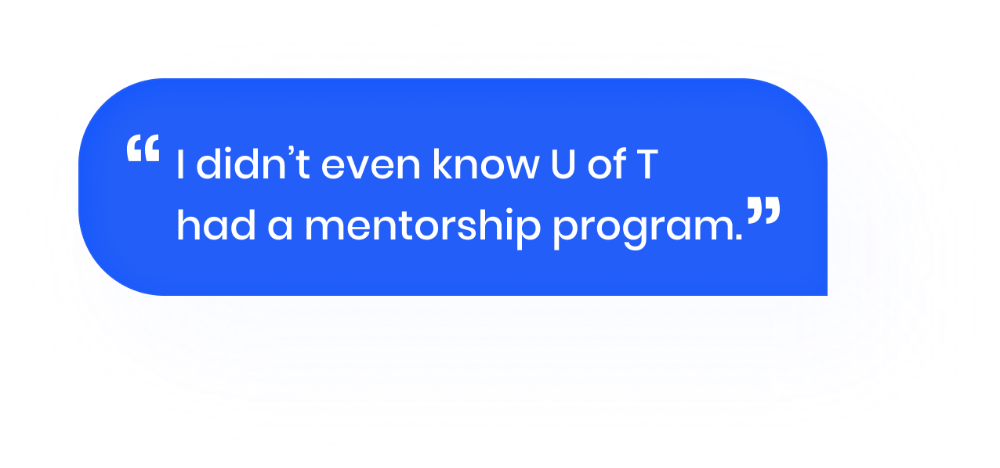
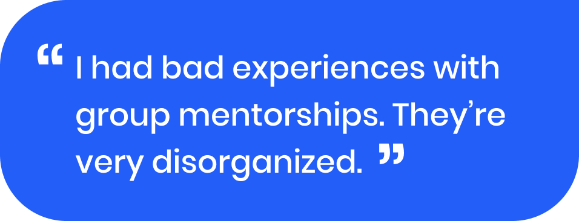
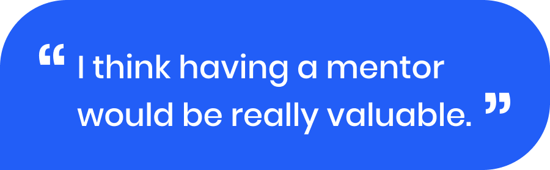
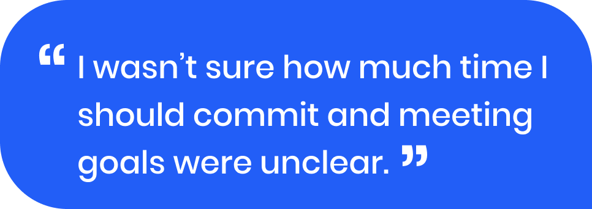

Meet4Success
University of Toronto Mentorship app
Check out the
 Medium fidelity prototype
Medium fidelity prototype
 Promotional Video
Promotional Video
Check out the
Medium fidelity prototype
Promotional Video
Role
Researched, ideated, prototyped, filmed videos and produced visuals in a team of four.
Category
UX Research
Product Design
Tools
Figma
Illustrator
Photoshop
Timeframe
Sep 2019 - Dec 2019
4 months
University of Toronto students are unsure of where to turn to for career advice. While, University of Toronto alumni want to support students but need an experience that fits into their busy schedules.
How can we improve student and alumni experiences within University of Toronto mentorship programs?
We implemented a design-thinking process to create a solution that would provide the best experience for University of Toronto students and alumni.

1. Empathize
User Research
In order to understand the current mentorship space and its users, our team conducted preliminary and competitive analysis on mentorship experiences at the University of Toronto (U of T) and elsewhere.

Major Findings
Existing U of T mentorship programs are siloed within individual faculties or programs.
Competitors include: Linkedin, Shapr, and Bumble Bizz

No consistent process for students or alumni to become a mentee, and the requirements and steps vary depending on faculty.
To understand the obstacles students and alumni were facing with mentorship, we conducted 16 individual interviews and an online survey with 34 respondents.
   Once we collected our data, we created an affinity map and clustered similar responses to identify common themes.

Insufficient mentorship awareness
A majority of students and alumni were unaware of mentorship programs offered by the University of Toronto.
Many didn’t know where to look if they wanted to get involved and didn’t understand what the matching process and time commitment would consist of.
Show less

Lack of structure and purpose
Students and alumni both wanted clear and defined goals in their mentorship experience.
Many times, both parties are left unsure about the meeting goal, and unaware of each others expectations.

Both students and alumni expressed that they see value and can benefit from a mentee-mentor experience.
Students specifically wanted advice on career development, while alumni wanted to develop leadership skills while giving back to the community.

Nearly all respondents mentioned they see more value in 1-on-1 mentorships.
Users emphasized the importance of having one point of contact. Group mentorship programs were described negatively and as disorganized.
2. Define
With all the information we’ve gathered through research, we narrowed down our goal and defined the direction we wanted to pursue through empathy mapping, user personas, and as-is scenarios. We began with empathy mapping to help us understand how U of T students and alumni truly think, feel, do, and say. This information was further synthesized into user personas.

The building blocks to defining our user’s needs and goals.
ViewMeet the users
Considering our design challenge involves two user types: the student and the alumni, we created two separate user personas. I created the visuals of these personas and assisted with the content.


We looked at their current mentorship experience
Now that we’ve identified Susan and Andy, we created an as-is scenario for each user to help us visually see their current journey and identify pain points and areas of opportunities.


3.Ideate
Once we refined the goal for the project, we generated 30 ideas to address Susan the student and Andy the alumni’s needs and obstacles. With dot voting, we narrowed it down to 15 ideas.

Priorization Grid
We organized these 15 ideas into a prioritization grid to determine the most impactful and most feasible ideas to help tackle mentor-mentee mentorship at U of T. I drew the doodles to go along with each idea for better visualization.

With the introduction of Meet4Success, let’s see how Susan and Andy’s mentorship experience will differ.
Below I visualized the to-be scenario to identify whether the introduction of the Meet4Success app will leave a positive impact on Susan and Andy’s existing mentorship experience.


4. Prototyping
Sketching the Interface


5. Evaluate & Test
Insights & Improvements
The next goal was to identify any gaps in our knowledge, overlooked issues, and friction points with the decisions made so far. Guerrilla testing with 3 representative users helped us prepare for the next round of iterations.
Hierarchy
Adjust information architecture to highlight the most important information.
Aa
>Labeling
Ensure call to action button labels are descriptive yet simple and direct.
Onboarding Barriers
Intergrate existing accounts. Ex. UTORid. Auto-fill information to reduce steps in the setup process.
Support options
Provide users the option to save and continue profile setup for later.
Optional Feedback
Feedback should never be forced. There should also be an incentive to complete survey.
Meet4Success App

This is the landing screen of the app.The mentee or mentor match is found here, along with articles related to mentorship or career development. Reminders such as “set your availability” or upcoming meetings will also appear on this screen.

The second tab will lead to an inbox with past and current mentee or mentor conversations. User can communicate in app without giving away personal contact information.

The profile section will include the users personal information, experiences, and meeting preferences. These details can be altered at any time.
Meet4Success App
Meet4Success is designed and tailored to the users needs. It’s data-driven, and provides a personalized 1-on-1 experience.
ONBOARDING
Meet4Success matches users based on similar goals, interests, and meeting preferences.

MATCHING
Users will receive a match within minutes of signing up, with the option of viewing the other person’s profile before accepting or declining.

CONSERVATION STARTER
When paired with a new mentor or mentee, the chat will provide message prompts to reduce the pressure and anxiety of starting a conversation.

REQUEST A MEETING
Organizing a meeting is streamlined with calendar sharing and location tips. Once a meeting is confirmed, the details can be exported to iCalendar, Google Calendar, and Outlook.


ADD STRUCTURE
Create an agenda for your meetings to avoid disorganization and misguided expectations.

REMINDERS
Gone are the days of missing a meeting because you’ve simply forgot. Meet4Success provides notification reminders prior to the meet up. After a meet up, the app will remind the mentee to send a follow up message to the mentor to help foster a lasting mentorship experience.

Reflection
Without research, you’ll lack a strong product design foundation.
Throughout this project I’ve come to learn the significance of gathering the right data from our target users. Without it, it would’ve been hard to avoid being biased and difficult to justify our design decisions. As our product came to fruition, I witnessed the positive impacts of completing thorough research and how it led us to create a product far from what I initially envisioned.